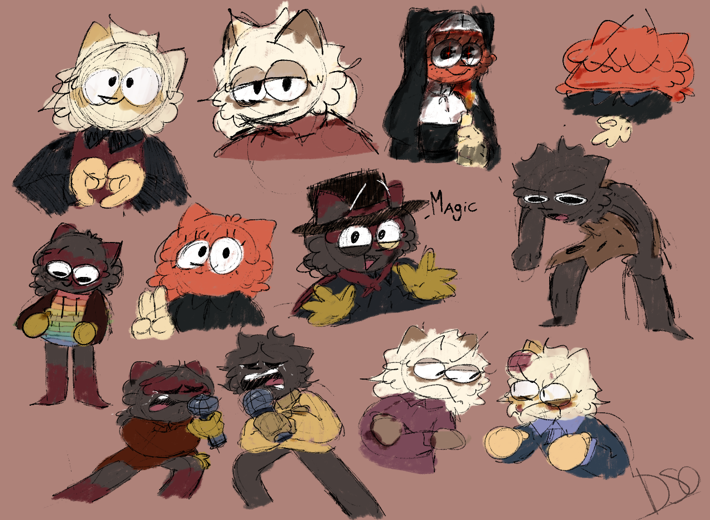

Trabajos de Animacion
Mis Proyectos "animados" los inicie desde el 2020, usando el Programa FlipaClip y de ahi de poco en poco yendo a probar con otros programas, aparte de los de movil, llegando a los de Computadora (Como Adobe Animate, Pincel 2D, Clip Studio Paint, FireAlpaca, Krita y otras mas que ni me acuerdo), hasta establecerme con solo Clipstudio paint, que es el Programa de Animacion y Dibujo que mas uso aparte de Krita.
Con el paso de los años, las animaciones originales las eh dejado de hacer para darle prioridad a otros proyectos (El Dibujos y LaPrision). Lo que si eh hecho mas seguido han sido ilustraciones como por ejemplo en mi estudio de Tecnico Profesional haciendo algunos logos y dibujos para el proyecto, algo aparte de eso eh estado conviviendo con otros artistas y animadores para compartir mi arte con mas gente.
la animacion poco a poco la eh dejado de utilizar (al igual que la rotoscopia) porque es tardado, y para videos como el dibujos demoraria mucho y pues youtube no es tan bueno que digamos xd, pero si eh dado algunos experimentos con animacion y de diferentes estilos (Animacion por celda, Rotoscopia, Animacion3D) en cada video para dar algo nuevo cada tiempo para la gente cada que pueda.

El Dibujos
El Dibujos Nacio como una idea que tenia desde pequeño, inspirado en lo youtubers con sus OCs, yo me quize inspirar de ellos y cree un monigote con apariencia a la mia y como me dio flojera darle un color o varios, decidi que fuera blanco, y adjuntandole en su rostro las iniciales de DSO, que significaria el nombre de "Dibujos Sin Originalidad".
Ya en este año 2026 junto a del 2025, eh tratado de "Diferenciarme" con los demas artistas que hacen lo mismo que yo, solo que son palitos, los videos que eh hecho con principal al dibujos son hablando sobre cosas que me gustan, aveces criticando algunas otras pero siempre siendo para todo publico (creo?).
Ahora el futuro del El Dibujos es medio dudoso, ya que trato de contar una historia en solo 11 videos, filosofar con las dudas que cualquier joven podria tener sobre si mismo, y siendo joven pues es complicado pero no imposible, espero que les guste como sera la primera temporada del el dibujos como parte del canal.
Catshow
Este Proyecto Nacio un Febrero del 2022, y desde ese entonces hasta hoy, la idea sigue siendo la misma, (no ah cambiado mucho la vrd) teniendo a los 5 Protagonistas en la "Serie" si se le puede llamar asi.
solo fueron dibujos de la idea, hasta que en vacaciones del 2023 empece a usar la computudadora para dibujar despues de tener mi tableta grafica echando polvo ahi sin usarla, asi haciendo el primer video llamado "tori" en mi canal de youtube. haciendo 14 capitulos de la serie y terminado en el 2024 con el episodio "The End" finalizando la serie.
Ahora lo que hice de catshow es entreverado, ya que muchas ocasiones eh tratado de traerlo otra vez pero siempre se queda estancado, ya casi estando en un limbo que ya nunca saldra algo nuevo de catshow. lo ultimo que hice del proyecto fue en un anuncio de un juego que hice con amigos para darle publicidad xd. me gusto como quedo la vrd.
La Prision